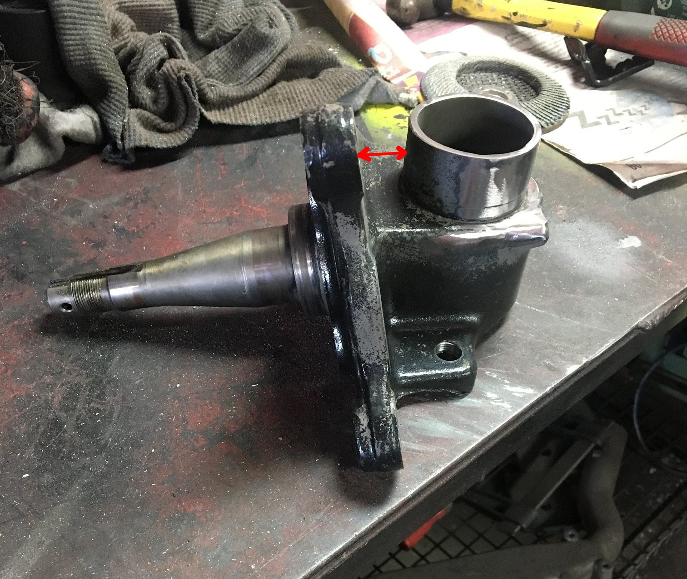

Yes, useful info adamvann3, thanks, I have a set of Z31 coilovers coming from Powertrix. With the fronts I anticipate welding in a brace between the strut tube and the upper part of the spindle to reduce flex in that area, because race car. Which you appear to have done in your second pic.
I guess it should also be noted that strut tubes from a non-adjustable suspension are somewhat preferable. They are 2 inches or 51 mm in diameter all the way, while the adjustable ones only have an inch or less of the tube with that diameter at the bottom. Not a big difference, but cutting the tube so close to the bottom part is a bit less convenient.
My parts car is a funny wreck and had an adjustable on one side and a non-adjustable on the other.
When it comes time to fit the front Powertrix coil overs I'll be looking at beefing up the lower part of the strut tube, they are the same diameter as those of the earlier Z cars which were a considerably lighter car. Something simple like welding on a piece of 25mm square tube vertically from spindle up to the new part. It's attention to detail like this that can make a difference when the suspension will be subject to big G loads.
I'll just post a summary with photos for reference, because the questions come up sometimes and I just explained it to someone. The photos are here http://imgur.com/a/5VatW
On the stock assemblies there were two different bases that hold the strut tube, brake, and the spindle or axle stub. Everything should be the same for the spindle/axle stub and brakes. The two different types were 84-86 and 87-89. The differences are in strut tube to wheel clearance, kingpin inclination, and ABS sensor mounting spots. (Feel free to correct me if I'm wrong.) There might be a wheel offset difference, but I'm not sure since it's really the strut tube offset from the rest that was changed for 87+. All of them had spots for ABS sensor and mounting holes between the brake caliper mounting holes, but they were not drilled unless the car had the system. 3 holes on zenki, 2 holes on kouki (2 bolt and one bolt mounting). The ABS sensor spot might actually be the easiest to tell difference, but the gap indicated with a red arrow in the first photo is a pretty significant visual difference too.
There were two different types of strut tubes throughout 84-89, they were for either the adjustable or non-adjustable struts. On USDM cars turbo meant adjustable (except for Shiro) and NA meant non-adjustable. The non-adjustable was a straight tube with OD 51 mm or 2 inches. The adjustable was around 55 mm OD for most of its length but tapered to the same 51 mm at the base. The base is the same. Non-adjustable are easier to use for coilovers because the coilover base tubes fit over the strut tube very easily and they don't have to be cut as short. Adjustable ones can be used just as well but have to be cut down to no more than 25-30 mm or 1 inch or so.
Most are not my photos, I hope no one minds me using them. I had a photo of a kouki assy with ABS holes, but I lost it. Kouki, note the gap Kouki adjustable (US turbo) Kouki non-adjustable (US NA), also kouki style ABS sensor mounting spot (not drilled) Zenki non-adjustable on the left, adjustable on the right, also zenki style ABS sensor mounting spots (not drilled) Zenki adjustable, note the gap
I am trying to figure out that what car I have. Unfortunately the car is far away from me, so I can no check by myself. If it is a 87 na but before the facelift, then what struts do I have. With smaller ot the larger gap? Kouki pic or Zenki pic from above? Any best guess?
What I meant was the raised (embossed?) part. You don't have the holes there but they could be drilled.
Yeah I understood there's no holes. I was mainly talking about the casting one the latter style. Maybe I didn't look @ 88 turbo ones close enough to notice that part of the casting. I'll check them again when I return home on Monday. I was up for 38hrs straight when that last post was made. So who knows
Originally posted by Racinjitter
:lol: Those of us who say A/C FTW all have a g/f or wife. ac+women=more quiet=possibility of sex. -
ac+women=SUPER BITCHING=no sex.
 Originally posted by Racinjitter
Originally posted by Racinjitter
{kind=link}
{kind=link}
{kind=link}
{kind=link}